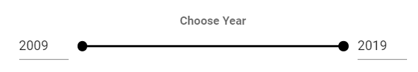

Фильтр с диапазоном
template
<v-card
flat
color="transparent"
>
<v-card-text>
<v-row>
<v-col class="px-4">
<b>Choose Year</b>
<v-range-slider @change="loadBook(page, '')"
v-model="range"
:max="max"
:min="min"
color="black"
track-color="gray"
hide-details
class="align-center"
>
<template v-slot:prepend>
<v-text-field
:value="range[0]"
class="mt-0 pt-0"
hide-details
single-line
type="number"
style="width: 60px"
@change="$set(range, 0)"
></v-text-field>
</template>
<template v-slot:append>
<v-text-field
:value="range[1]"
class="mt-0 pt-0"
hide-details
single-line
type="number"
style="width: 60px"
@change="$set(range, 1)"
></v-text-field>
</template>
</v-range-slider>
</v-col>
</v-row>
</v-card-text>
</v-card>
script
loadBook (pageNumber, order) {
if (sessionStorage.getItem('auth_token')) {
this.findUser()
}
if (order !== undefined) {
this.order = order
}
$.ajax({
url: 'http://127.0.0.1:8000/library/books/list/?ordering=' + this.order + '&page=' + pageNumber + '&search=' + this.search + '&author=' + this.checked + '&min_year=' + this.range[0] + '&max_year=' + this.range[1],
type: 'GET',
success: (response) => {
this.createRange()
this.books = response.results
this.total = response.count
},
error: (response) => {
alert('Something went wrong, please, try again')
}
})
}
createRange () {
$.ajax({
url: 'http://127.0.0.1:8000/library/books/list/?search=' + this.search + '&author=' + this.checked + '&ordering=year&page=1',
type: 'GET',
success: (response) => {
this.min = response.results[0].year
this.range = [Math.max(this.min, this.range[0]), Math.min(this.max, this.range[1])]
},
error: (response) => {
alert('Something went wrong, please, try again')
}
})
$.ajax({
url: 'http://127.0.0.1:8000/library/books/list/?search=' + this.search + '&author=' + this.checked + '&ordering=-year&page=1',
type: 'GET',
success: (response) => {
this.max = response.results[0].year
this.range = [Math.max(this.min, this.range[0]), Math.min(this.max, this.range[1])]
},
error: (response) => {
alert('Something went wrong, please, try again')
}
})
}
